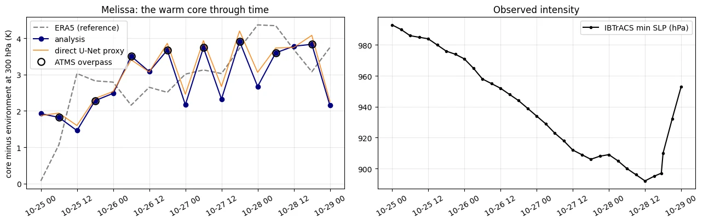
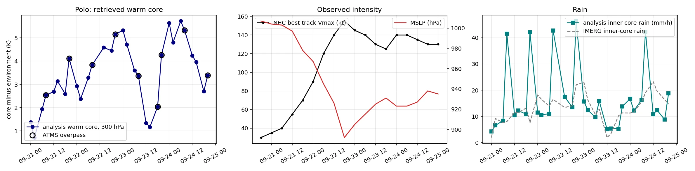
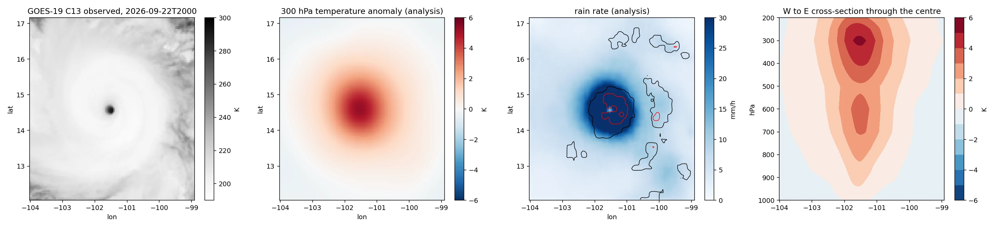
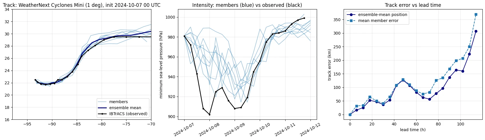

Sixteen analysis times, each retrieved from the infrared and microwave radiances alone with an 8-member, 500-step ensemble on a T4. ERA5 and IMERG are used only to verify. Domain-mean errors are shown because they are the standard metric, with the caveat that the climatological standard deviation of temperature on these levels is only 2 to 4 K, so the inner-core numbers and the warm-core profiles below are the ones that matter.
One analysis time at a glance
Pick a time. Filled dots mark scenes with an ATMS overpass inside the window; without one the retrieval is carried by the infrared through the learned proxy and the prior alone.
The warm core through rapid intensification and landfall
Core-minus-environment temperature at 300 hPa, the level where a mature hurricane's warm core peaks, for every analysis time. ERA5 at 0.25 degrees smooths the eye, so even the reference is a muted version of the storm aircraft measured; the retrieval and the reference are compared at the same resolution.
Core: RMSE at 300 hPa in the central 16 x 16 pixel box (about 70 km at 4.4 km per pixel) around the best-track centre. Domain: mean over ten levels on the full 128 x 128 grid. All runs 8 members x 500 steps. Two scenes have gaps in the ERA5/IMERG labels and are not scored.
Physics-guided score-based data assimilation
Why a prior at all
Two satellites see a hurricane from above and its temperature structure lives below the cloud. The proxy gives one deterministic answer; the diffusion prior encodes what physically realised storms look like, so the observations move the sample within that manifold, and independent chains give a flow-dependent spread without an ensemble forecast.
Why the physics is where it is
The observation operator is analytic, so it enters the likelihood only on the channels it can represent: the oxygen sounding channels of ATMS after a per-channel bias correction measured against ERA5. The infrared, which the operator cannot represent under an ice canopy, is carried by the learned proxy. Physics where the physics is sound, learned where it is not.
Two things were wrong, and how each was found
1. The observation operator
Simulated brightness temperatures from the ERA5 truth against what the satellites measured, per channel, over 16 Milton scenes and 60 scenes from the 2023 validation storms. Bias is constant and correctable; scatter is not.
The oxygen sounding channels carry 14 to 23 K of bias with 1 to 3 K of scatter, and the Milton bias matches the archive bias to within 1 to 2 K, so the archive correction transfers. The window channels are unusable through an operator with no cloud or scattering physics: under Milton's ice canopy the infrared sees 200 K where the operator predicts a warm surface, and no temperature or rain field can reconcile that.
2. The sampler
The first Milton run produced 14 K temperature errors on every scene while the U-Net proxy sat at 1 to 3 K. Instrumenting a single chain step by step showed the cause: likelihood gradients applied where alpha_t is near zero, on a Tweedie estimate that is pure amplified noise, pushed the chain off the data manifold within two steps, after which the score network's noise prediction failed and the state grew exponentially until the soft clamp held it at 5 to 6 sigma.
Fix: inflate every observation error by the Tweedie variance of the clean-state estimate (pseudo-inverse guidance), and apply no guidance above t = 0.65. Same weights, same data, same chain.
First full run on the T4 (8 x 500) before the fix: misfit and error, K.
What the generative step adds, measured three ways
Three retrievals of the same 16 scenes, all 8 members and 500 steps. Analysis: the full system, a microwave-aware U-Net proxy plus the calibrated physics term. Direct proxy: the U-Net alone, the approach Tomorrow.io adopted for ICGen. Physics-only microwave: the proxy is shown only the infrared and the ATMS radiances reach the state through the calibrated likelihood alone.
Two readings follow. First, the physics term works: starting from an infrared-only proxy it drives the bias-corrected sounding-channel misfit to the same 1.5 to 2.8 K floor the full system reaches, so the observations do enter the state through the likelihood. Second, it recovers a weaker warm core than the microwave-aware proxy, because ATMS at 16 x 16 on this grid cannot resolve a 30 km eye and many inner-core structures fit the radiances equally well; the proxy learned the correlation between the coarse sounder pattern and the sharp core from 805 storms. Averaged over the ATMS scenes the physics-only amplitude (2.6 K) is actually nearer ERA5's 2.8 K than the full system's 3.4 K, but ERA5 at 0.25 degrees smooths the eye, so amplitude against ERA5 is not a decisive test; the inner-core RMSE, where the full system is 0.8 K better, is. The physics guarantees consistency with the observations, the learned proxy supplies the resolution the observations lack. With the proxy in distribution the ensemble spread collapses to about 0.1 K; it would open only where the proxy is uncertain.
Three ways to make the U-Net proxy smarter, and why none of them stayed
Four proxies trained on the same 805 scenes, 6,000 steps, seed and normaliser; only the network changed. A learned positional embedding, global self-attention over the infrared tokens at the 32 x 32 level, and a message-passing graph encoder over the valid sounder pixels (k-nearest-neighbour graph, k = 16, three rounds) in place of the convolutional microwave encoder. Train fit is the pooled RMSE on the training scenes, which the network has seen; the gap is validation minus train.
Proxy variants scored with one tool on the same scenes. Core: 300 hPa, central 16 x 16 pixels, 8 scenes with an ATMS overpass. Validation: 252 held-out 2023 scenes, all levels and pixels.
| proxy | params | train fit T (K) | val T (K) | gap (K) | val rain (mm/h) | core, ATMS (K) | core, all 16 (K) |
|---|---|---|---|---|---|---|---|
| convolutional U-Net (used) | 9.56 M | 1.30 | 2.89 | 1.60 | 4.72 | 1.13 | 1.77 |
| + positional embedding | 9.57 M | 1.32 | 3.00 | 1.67 | 4.75 | 1.33 | 1.76 |
| + embedding + self-attention | 9.70 M | 1.32 | 2.97 | 1.65 | 4.60 | 1.53 | 2.16 |
| graph microwave encoder | 9.22 M | 1.30 | 3.05 | 1.75 | 5.43 | 1.31 | 1.83 |
None of the three beat the plain U-Net, and all three lost in the inner core, where the sharpness matters. The more useful reading is the gap column: every variant fits the training scenes to about 1.3 K and every variant sits between 2.9 and 3.05 K on the held-out season. A 1.6 K gap shared by four architectures says the bottleneck is the 805-scene training set, not the network, so the next lever is data and regularisation rather than a fourth encoder. One seed each; the 0.2 to 0.4 K core differences carry a consistent sign across scenes, the 0.1 K validation differences do not.
Hurricane Melissa, October 2025: the same system, unchanged, on a storm it had never seen
Everything above was built around Milton. The obvious question is whether any of it survives a storm the system was not tuned for, so the unchanged Milton checkpoints, normaliser and operator calibration were run on Hurricane Melissa, the Category 5 that struck Jamaica on 28 October 2025 at 897 hPa after peaking at 892 hPa, the strongest Atlantic landfall on record. Seventeen six-hourly scenes from 25 to 29 October were built with the same scene builder from GOES-19 (GOES-East since April 2025), ATMS on NOAA-20 and Suomi-NPP (8 of the 17 times had an overpass, all at 06 and 18 UTC), ERA5 and IMERG Late Run. Before any retrieval the operator was audited again on Melissa: the five ATMS sounding-channel biases came back within 1 K of Milton's (24.0, 22.5, 19.1, 15.8, 22.5 K against 23.1, 21.5, 19.1, 16.1, 22.9 K), so the bias belongs to the operator, not the storm, and the Milton calibration was used as it stood.

Every headline number improved on the second storm, and the finding that direct injection matches the guided sampler on the mean reproduced to the second decimal on all 17 scenes. The sawtooth in the warm-core curve is the result to look at, and the ERA5 line is what settles what it means. The retrieval reads 3.3 K on average when a sounder is present and 2.5 K on the infrared-only hours between; ERA5 reads 2.9 K on both sets, with no sawtooth at all. So the retrieved core does not track the storm between overpasses; it tracks the observations. With the sounder it overshoots ERA5 by 0.4 K on average, without it it undershoots by 0.5 K and the inner-core error rises from 0.91 to 1.37 K. Half of the analysis times are, in effect, a different and weaker instrument, which is the cadence argument for a sounder constellation made by one storm's own numbers. The honest parts: the ensemble spread is 0.06 to 0.11 K in the core against errors of 0.5 to 3.3 K, so the 8 members are badly underdispersive; the prior imposes a 1.9 K core on the first scene where ERA5 has almost none (0.08 K), because it was trained only on storm-centred scenes; the retrieved core saturates near 4 K while ERA5 reaches 4.4 K at peak intensity, and the two peak-intensity scenes and the post-landfall scene with Jamaica in the domain are the worst three.
Melissa, scene by scene. Core: RMSE at 300 hPa in the central 16 x 16 pixels (about 70 km). Warm core: 5 x 5 pixel centre minus the environment beyond 48 pixels, at 300 hPa, the same definition for ERA5 and the retrieval. Analysis = 8-member ensemble mean; U-Net = the direct proxy. Rain labels are IMERG Late Run (the Final Run had not been produced for October 2025).
| time | ATMS | ERA5 warm core (K) | retrieved warm core (K) | core RMSE analysis (K) | core RMSE U-Net (K) | domain RMSE (K) |
|---|---|---|---|---|---|---|
| 25 Oct 00 UTC | no | 0.08 | 1.93 | 1.04 | 1.06 | 0.75 |
| 25 Oct 06 UTC | yes | 1.07 | 1.82 | 0.92 | 0.87 | 1.49 |
| 25 Oct 12 UTC | no | 3.03 | 1.46 | 1.50 | 1.42 | 0.71 |
| 25 Oct 18 UTC | yes | 2.83 | 2.28 | 0.49 | 0.48 | 0.44 |
| 26 Oct 00 UTC | no | 2.79 | 2.48 | 0.84 | 0.79 | 0.64 |
| 26 Oct 06 UTC | yes | 2.16 | 3.51 | 1.29 | 1.31 | 0.70 |
| 26 Oct 12 UTC | no | 2.65 | 3.08 | 0.83 | 0.83 | 0.69 |
| 26 Oct 18 UTC | yes | 2.51 | 3.67 | 0.78 | 0.84 | 0.65 |
| 27 Oct 00 UTC | no | 3.01 | 2.17 | 1.07 | 1.06 | 0.71 |
| 27 Oct 06 UTC | yes | 3.13 | 3.74 | 0.50 | 0.56 | 0.69 |
| 27 Oct 12 UTC | no | 3.03 | 2.33 | 0.71 | 0.77 | 0.50 |
| 27 Oct 18 UTC | yes | 3.72 | 3.91 | 0.82 | 0.84 | 0.98 |
| 28 Oct 00 UTC | no | 4.37 | 2.67 | 2.32 | 2.32 | 1.45 |
| 28 Oct 06 UTC | yes | 4.34 | 3.60 | 1.89 | 1.87 | 1.42 |
| 28 Oct 12 UTC | no | 3.69 | 3.78 | 0.67 | 0.67 | 1.00 |
| 28 Oct 18 UTC | yes | 3.08 | 3.83 | 0.56 | 0.53 | 1.16 |
| 29 Oct 00 UTC | no | 3.74 | 2.15 | 3.33 | 3.32 | 1.76 |
Scenes built with vaughan/scripts/prepare_milton.py (--storm MELISSA --season 2025 --goes-satellite goes19); retrieval and scoring cells in colab/melissa_cells.py; per-scene scores (with the ERA5 and U-Net warm cores), the Melissa operator audit and the figure in results/melissa. Same 8 members x 500 steps on a T4, about 3.5 minutes per scene.
Hurricane Polo, September 2026: the same system on an active Category 5, before the reanalysis existed
Milton and Melissa were both run after the fact, with ERA5 available to score against. Polo (EP172026) was run while the storm was still at sea. Polo became a tropical storm at 00 UTC on 21 September 2026 off the southern coast of Mexico, went from 55 to 155 kt in 30 hours, bottomed at 892 hPa at 18 UTC on the 22nd, weakened to 125 kt through an eyewall replacement on the 23rd, and returned to 140 kt on the 24th. Thirty-one scenes from 21 to 24 September were built from the NHC best track as it stood (the ATCF b-deck, updated with every advisory), the GOES-19 full disk and ATMS on NOAA-20 and Suomi-NPP, with no ERA5 at all: the scene builder gained a live mode in which the temperature label is simply absent. At 102 to 105 W the sounders pass near 08 and 20 UTC, two and a half hours from the synoptic hours, so the analysis grid was placed at 02, 08, 14 and 20 UTC alongside the 00, 06, 12 and 18 UTC scenes; nine of the 31 scenes have an overpass, including NOAA-20 nine minutes after the 20 UTC analysis time at the 892 hPa peak. The retrieval itself is unchanged: the Milton checkpoints, normaliser and operator calibration, 8 members and 500 steps on a T4, 3.5 minutes per scene.


Without a reanalysis, the checks are the ones a live system would have: does the analysis fit the sounder to within its assigned error, does the rain agree with IMERG, and does the core follow the storm. It does all three. The warm-core curve is the life history of the storm read from the satellites alone: the climb through the 21st, 5.2 and 5.3 K around the peak, the collapse to 1.2 K on the afternoon of the 23rd as the outer eyewall took over, and the recovery to 5.7 K at 00 UTC on the 24th. The cross-section at the peak overpass puts the core at 300 hPa, where a mature hurricane keeps it, and 26 of the 31 scenes peak between 250 and 400 hPa; the exceptions are the first hours and the replacement cycle. Rain over the domain agrees with IMERG to 5.9 mm/h, the same for the direct U-Net and the full system. The honest parts, again: the retrieved core is a trend indicator, not the physical core of a 892 hPa storm, which is far above 5 K; on the sounder scenes the inner-core rain (30 mm/h on average against IMERG's 14) is overestimated because the clear-sky microwave operator reads eyewall ice scattering as rain, and the U-Net does the same, so this is the operator's limitation from the cloud-ice audit showing up on a live case; the core spread is 0.07 to 0.14 K, as underdispersive as before; and the infrared-only hours between overpasses are noisier than the sounder hours, as on Melissa. The ERA5 comparison is added when ERA5T reaches the period, by rebuilding the same scenes with labels and rescoring the same analyses; nothing on the retrieval side changes.
Polo, scene by scene. Best track: NHC b-deck wind (kt) and pressure (hPa) interpolated to the analysis time. Warm core: 5 x 5 pixel centre minus the environment beyond 48 pixels, at 300 hPa; peak: the level where the anomaly is largest. Rain: mean rate in the central 16 x 16 pixels (about 70 km) for the analysis and for IMERG Late or Early Run. Fit: RMSE of simulated minus observed ATMS brightness temperature after the calibrated bias is removed, channels 7 / 8 / 9, on the overpass scenes.
| time | ATMS | wind (kt) | MSLP (hPa) | warm core (K) | peak (hPa) | core rain (mm/h) | IMERG (mm/h) | fit 7 / 8 / 9 (K) |
|---|---|---|---|---|---|---|---|---|
| 21 Sep 00 UTC | no | 35 | 1004 | 1.38 | 600 | 4.2 | 1.9 | |
| 21 Sep 02 UTC | no | 37 | 1004 | 0.72 | 600 | 6.5 | 9.2 | |
| 21 Sep 06 UTC | no | 40 | 1003 | 1.94 | 300 | 8.3 | 7.6 | |
| 21 Sep 08 UTC | yes | 45 | 1001 | 2.54 | 300 | 41.5 | 8.0 | 0.8 / 0.6 / 0.8 |
| 21 Sep 12 UTC | no | 55 | 997 | 2.69 | 300 | 10.4 | 11.5 | |
| 21 Sep 14 UTC | no | 60 | 991 | 3.14 | 300 | 12.2 | 11.5 | |
| 21 Sep 18 UTC | no | 70 | 978 | 2.59 | 300 | 10.8 | 13.1 | |
| 21 Sep 20 UTC | yes | 77 | 974 | 4.12 | 300 | 42.1 | 7.6 | 1.2 / 0.7 / 0.7 |
| 22 Sep 00 UTC | no | 90 | 967 | 2.93 | 300 | 11.4 | 18.2 | |
| 22 Sep 02 UTC | no | 100 | 960 | 2.39 | 300 | 10.5 | 16.5 | |
| 22 Sep 06 UTC | no | 120 | 945 | 3.29 | 300 | 11.1 | 13.9 | |
| 22 Sep 08 UTC | yes | 127 | 939 | 3.84 | 300 | 42.8 | 16.5 | 1.3 / 0.7 / 0.6 |
| 22 Sep 14 UTC | no | 145 | 915 | 4.59 | 300 | 17.4 | 13.4 | |
| 22 Sep 18 UTC | no | 155 | 892 | 4.45 | 300 | 13.5 | 14.0 | |
| 22 Sep 20 UTC | yes | 152 | 896 | 5.16 | 300 | 46.4 | 22.0 | 1.2 / 0.9 / 0.5 |
| 23 Sep 00 UTC | no | 145 | 905 | 5.32 | 300 | 15.7 | 23.0 | |
| 23 Sep 02 UTC | no | 143 | 908 | 4.72 | 300 | 12.5 | 16.3 | |
| 23 Sep 06 UTC | no | 140 | 915 | 3.60 | 300 | 9.6 | 10.7 | |
| 23 Sep 08 UTC | yes | 137 | 918 | 3.37 | 300 | 15.8 | 12.8 | 1.2 / 0.7 / 0.6 |
| 23 Sep 12 UTC | no | 130 | 925 | 1.34 | 500 | 5.1 | 1.9 | |
| 23 Sep 14 UTC | no | 128 | 927 | 1.17 | 500 | 5.4 | 3.3 | |
| 23 Sep 18 UTC | yes | 125 | 931 | 2.05 | 600 | 5.3 | 10.2 | 1.6 / 0.6 / 0.6 |
| 23 Sep 20 UTC | yes | 130 | 928 | 4.27 | 300 | 13.8 | 11.3 | 1.2 / 0.6 / 0.6 |
| 24 Sep 00 UTC | no | 140 | 923 | 5.64 | 300 | 16.7 | 11.3 | |
| 24 Sep 02 UTC | no | 140 | 923 | 4.81 | 300 | 12.2 | 11.7 | |
| 24 Sep 06 UTC | no | 140 | 923 | 5.73 | 300 | 16.3 | 15.5 | |
| 24 Sep 08 UTC | yes | 138 | 924 | 5.32 | 300 | 42.4 | 19.0 | 1.1 / 0.6 / 0.6 |
| 24 Sep 12 UTC | no | 135 | 927 | 4.24 | 300 | 10.8 | 23.2 | |
| 24 Sep 14 UTC | no | 133 | 931 | 3.97 | 300 | 12.4 | 19.7 | |
| 24 Sep 18 UTC | no | 130 | 938 | 2.71 | 300 | 8.7 | 16.4 | |
| 24 Sep 20 UTC | yes | 130 | 937 | 3.39 | 300 | 18.8 | 14.7 | 1.3 / 0.6 / 0.4 |
Scenes built with vaughan/scripts/prepare_milton.py (--track atcf --atcf-id EP172026 --live --goes-satellite goes19, on the 02/08/14/20 and 00/06/12/18 UTC grids); retrieval and scoring in colab/vaughan_polo.ipynb; per-scene scores, the structure pack (polo_structure.json) and the figures in results/polo. Colab free tier, T4.
What a state-of-the-art forecast model does from this starting state
The analysis is only the start of a forecast, so here is the other end of the pipeline. Google DeepMind open-sourced WeatherNext Cyclones in August 2026, the ensemble model the National Hurricane Center used in the 2025 season. This is its lightweight 1-degree version (WeatherNext Cyclones Mini, trained on data before 2024, so Milton is out of sample), run on a free Colab TPU from HRES initial conditions at 00 UTC on 7 October 2024, the time of the first ATMS scene above, with 8 members and 20 six-hour steps, and tracked with the model's own cyclone tracker against IBTrACS.

The track is excellent for a 1-degree model: the ensemble mean is within 60 km of the observed centre at landfall three days out, and the errors only grow once the storm is over the Atlantic. Intensity is where the story is. The model knew Milton would become a major hurricane, but from a 1-degree initial state it could not know how fast: the observed pressure fell from 981 to 908 hPa in 18 hours while the members took two days to get there, and by landfall observed and forecast agreed again only because the real storm had weakened to meet them. At this resolution a 902 hPa core cannot be represented at all. The timing of rapid intensification is set by the inner-core structure at initialisation, which is precisely what the sounder-based analysis above is meant to supply; putting that analysis into a forecast model at 0.25 degrees is the proposed experiment, not this one.
Model, weights and notebook: github.com/google-deepmind/weathernext (Apache 2.0). Checkpoint WeatherNextCyclones_Mini_<2024.npz; initial conditions from the notebook's sample HRES file for 2024-10-07 00 UTC; scoring code in colab/weathernext_milton_cells.py; member tracks and scores in results/weathernext. Observed values are IBTrACS USA fields at synoptic times; Milton's peak of 897 hPa fell between them.
What the diffusion model knows before it sees any observation
Four unconditional draws from the score model after 60,000 training steps on 805 storm-centred scenes, no observations at all. Compact warm anomalies at 400 hPa, organised rain clusters, and physically consistent columns; the network has no positional embedding, so it learns that warm cores exist but not that they sit at the centre. The observations supply the location.
Where this sits next to Tomorrow.io's own work
Cannon et al. (2024), multi-satellite precipitation retrievals
An EfficientNetV2 encoder-decoder with 2+1D temporal convolutions ingests an hour of raw geostationary imagery plus whatever sounder overpasses fell in the window, each instrument channel as its own sparse input plane, and retrieves rain with a 32-quantile loss against ground radar. For Milton after landfall on 10 October, adding a TMS overpass raised the Heidke skill score from 0.64 to 0.71 at 0.25 mm/h and from 0.25 to 0.37 at 6 mm/h. This page looks at the same overpasses from the other side: the temperature column above the rain.
Guerrette et al. (2026), all-sky assimilation of the sounder constellation
In FV3-JEDI with variational bias correction and a symmetric cloud-impact error model, the constellation matches ATMS for water vapour impact and reaches about half of ATMS for tropospheric temperature. TMS sounds temperature at 118 GHz rather than 50 to 60 GHz, where ice scattering in a hurricane core is far stronger; the channels found trustworthy here through an analytic operator are the ones that instrument does not carry. That gap is what the ice-scattering-aware operator in the recommendations is for.
What this would change in an ICGen-style system
Based on Tomorrow.io's published ICGen post and the NOAA EPIC evaluation of the TMS sounder in FV3-JEDI. Proposals, not claims about internals.
- Keep diffusion in physical space. The reported 50 percent degradation came from VAE reconstruction artifacts, not from the diffusion model. Pixel-space priors on storm-centred or regional patches avoid the artifact; if compression is needed, train the decoder with a radiance-consistency loss so what the operator sees survives the bottleneck.
- Schedule the guidance. Likelihood gradients before the Tweedie estimate is meaningful destabilise the chain; inflate observation errors by the Tweedie variance and gate guidance early. This is a plausible contributor to any score-based DA that "nudged humidity" but did not scale.
- Use direct injection as the proxy inside the Bayesian framework, not instead of it. The injection model is the U-Net here; the prior and physics act as a corrector and the chains give flow-dependent spread, the quantity a 30-member 3DEnVar background otherwise has to supply.
- Audit the operator per channel before it enters a likelihood. The bias and scatter table above is the template; NOAA's symmetric-cloud-impact error model is its operational form.
- An ice-scattering-aware fast operator for 118 and 183 GHz. TMS sounds temperature at 118 GHz, where hydrometeor scattering in a hurricane core is far stronger than at the 50 to 60 GHz ATMS channels that proved robust here. Emulate a scattering reference (line-by-line plus multiple scattering, with ice habit and size) as a differentiable network with hydrometeors in the state.
- Verify the inner core against dropsondes, not reanalysis. ERA5 puts Milton's peak warm core at 4.4 K; reconnaissance measured well over 10 K.
What this is and is not
Limitations
Small preset (U-Net base 32, score base 48) trained at 128 x 128 on a free T4. Eight ensemble members per scene, whose spread collapses to about 0.1 K because the proxy term dominates. ERA5 as truth smooths the eye. The prior has no positional embedding, so it learns that warm cores exist but not where; the observations supply the location. The analytic operator has no cloud variable; the state has no humidity. Coverage is intermittent: seven of sixteen scenes had no ATMS overpass in the window.
Production path
A learned observation operator emulated from LBLRTM and DISORT references with ice cloud properties, replacing the analytic placeholder; cloud and humidity in the state vector; a positional embedding and 256 x 256 fine-tuning of the prior; distillation to a few-step sampler; a forecast background term to turn the retrieval into cycling assimilation; and inner-core verification with dropsondes from the Milton reconnaissance flights. Applies unchanged to any tropical cyclone with GOES or Himawari infrared and a sounder overpass.